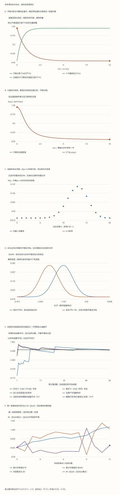

本页目录
- 第二定律说的是统计规律；单条轨迹还要单独记账
- 1. Langevin方程：摩擦与力噪声的单位先分清
- 2. 同一个时间尺度：关联函数、冲量响应与噪声谱
- 3. 从弹道到扩散：MSD中的短时间不能丢
- 4. 五态环：先给轨迹一个正规化的初始分布
- 5. 指数平均的等式，为什么会比普通平均难估计
- 6. 移动势阱：把每一步分成做功和换热
- 7. 反向实验：步骤顺序也必须反过来
- 8. Jarzynski与Crooks：自由能比较平衡态，实际末态可以不平衡
- 9. 偏移初态：边界修正来自哪一项
- 10. 总熵产生：必须使用实际分布的系统熵变
- 11. 实验：先看精确矩，再看有限样本
- 12. 向前沿推进：测量反馈、耗散推断与模型边界
非平衡 I · 涨落、功热收支与路径概率比
前置：统计系综、动力学与输运、概率与证据。需要高斯分布、期望值和一阶微分方程；本页逐步建立随机热力学中的量。
完成后你应能：从OU过程推导涨落耗散关系；区分噪声强度与扩散系数；逐路径计算功、热和系统熵变；写出完整正反向实验；解释精确指数平均为什么很难由少量样本估计。
第二定律说的是统计规律；单条轨迹还要单独记账
一个微小粒子可以在某一小段时间里从环境吸热，也可以暂时逆着平均流向运动。它没有让宏观第二定律失效。问题是：这样的轨迹有多常见？把轨迹倒过来，需要怎样准备和驱动实验？两种实验的概率比能否由实际交换的能量解释？
本页用三个不同但可以精确核对的模型回答。先看平衡布朗速度的涨落与响应；再看五态环上的偏置步行；最后移动一个谐势阱，逐步测量功和热。三个模型的变量、初态和时间反演规则分别规定，不把一个模型的位移直接改名为另一个模型的功。
1. Langevin方程：摩擦与力噪声的单位先分清
一维布朗速度的经典模型为
\(m\) 是质量，\(\gamma\) 是摩擦系数，\(B_t\) 是标准Wiener过程，满足 \(E[(dB_t)^2]=dt\)。形式上也可写 \(m\dot v=-\gamma v+\xi(t)\)，其中 \(\langle\xi(t)\xi(t')\rangle=2\gamma k_BT\,\delta(t-t')\)。因此“力噪声强度”是 \(D_\xi=\gamma k_BT\)，不能把它当成位置扩散系数 \(D_x\)。
暂时把噪声写成任意 \(D_\xi\)。用Itô公式对 \(v^2\) 求均值，得到 \(d\langle v^2\rangle/dt=-2\gamma\langle v^2\rangle/m+2D_\xi/m^2\)。稳态方差因此为 \(D_\xi/(\gamma m)\)。若热浴确实使粒子达到温度 \(T\) 的经典平衡，均分定理又要求 \(\langle v^2\rangle=k_BT/m\)，这才固定 \(D_\xi=\gamma k_BT\)。
噪声和摩擦的这种联系依赖热平衡、模型的粗粒化及经典适用范围。把任意外部噪声加到阻尼方程上，不会自动得到同一个温度的涨落耗散关系。本页的低频经典模型也不替代低温量子噪声谱。
2. 同一个时间尺度：关联函数、冲量响应与噪声谱
设 \(\tau_v=m/\gamma\)。OU方程的解是初值指数衰减加上高斯噪声的卷积；从平衡初态出发，
若在 \(t=0\) 加一个力冲量 \(I\)，速度立即改变 \(I/m\)，随后按相同时间尺度衰减，所以对 \(t>0\)，单位冲量响应 \(R_v(t)=e^{-t/\tau_v}/m\)。这个模型的FDT正是 \(C_{vv}(t)=k_BT R_v(t)\)。关系中既有具体观测量，也有明确的力耦合方式，不能只写“响应等于某个相关函数”而省去因子。
采用双边谱约定 \(S_v(\omega)=\int_{-\infty}^{\infty}C_{vv}(t)e^{i\omega t}dt\)，并用 \(e^{-i\omega t}\) 表示外力的复振幅，则
图中只画非负频率部分，但数值仍是双边谱。单边谱在正频率上的归一化会多一个因子2；角频率和普通频率也涉及 \(2\pi\)。先写变换约定，才能可靠比较测量数据。
详解1：为什么关联衰减和响应衰减相同，却不是同一个量
OU解为 \(v(t)=v(0)e^{-t/\tau_v}+\sqrt{2\gamma k_BT}/m\int_0^t e^{-(t-s)/\tau_v}dB_s\)。未来噪声与平衡初始速度独立，乘上 \(v(0)\) 求均值，噪声项为零，只剩平衡方差乘指数衰减。
响应则来自另一个问题：施加已知冲量后，平均速度改变多少。相同的线性衰减算符控制两者，但关联的幅度是 \(k_BT/m\)，单位冲量响应的幅度是 \(1/m\)，二者相差 \(k_BT\)。本页图用平衡速度方差归一化，才使两条曲线重合。
第三条曲线是从确定的 \(v(0)=0\) 出发的方差 \((k_BT/m)(1-e^{-2t/\tau_v})\)。它从零增长到平衡值，描述另一个初始条件，不能把它误当平衡关联函数。
3. 从弹道到扩散：MSD中的短时间不能丢
位置增量是速度的时间积分。对平衡速度，利用时间平移不变性，
在 \(t\ll\tau_v\) 时，括号的线性项相消，MSD约为 \((k_BT/m)t^2\)，是弹道标度；在 \(t\gg\tau_v\) 时，MSD渐近为 \(2D_xt\)。因此测量位置扩散需要合适的时间范围，还要考虑定位误差、曝光平均和外部漂移。实验表保留精确MSD及两种极限；很短时间用级数计算，避免两个接近数相减。
自己检查：在室温水中，取球半径 \(a=0.5\) μm、黏度 \(\eta_{\rm fluid}=10^{-3}\) Pa·s、\(T=298\) K，用Stokes摩擦估计 \(D_x\)。这里 \(a\) 是半径，不能把直径混进去。
详解2：明确半径和单位后，扩散系数约0.44 μm²/s
在低Reynolds数、远离边界且采用无滑移Stokes阻力等条件下，\(\gamma=6\pi\eta_{\rm fluid}a\simeq9.425\times10^{-9}\) kg/s。用 \(k_B=1.380649\times10^{-23}\) J/K 得 \(D_x\simeq4.365\times10^{-13}\) m²/s，即约0.437 μm²/s。
一维长时间MSD斜率是 \(2D_x\)，不是 \(D_x\)；二维径向位移平方的平均则是 \(4D_xt\)。若测到二维轨迹却套一维因子，就会产生一倍的系统偏差。这个数值是明确条件下的估计，不应把水黏度、温度或粒子尺寸的不确定度省略。
4. 五态环：先给轨迹一个正规化的初始分布
考虑五个等能状态排成环。每步向右概率 \(p\)，向左概率 \(q=1-p\)，从均匀分布 \(1/5\) 开始。均匀分布对任意 \(p\) 都是稳态；\(p\ne q\) 时有非零稳态环流。它不是热平衡详细平衡态，而是一个受驱动的稳态。
将方向反过来且颠倒步骤顺序，得到时间反演路径。对含 \(k\) 次右步、\(n-k\) 次左步的路径，初始均匀权重在正反比中消去。定义净流 \(J=2k-n\)、无量纲亲和力 \(A=\ln(p/q)\)，则
若把每个局部概率比按局域详细平衡解释为环境熵变化，均匀稳态下系统熵变为零，所以此路径比就是总熵产生。五态环的选择让起点分布可正规化，也使每个邻近跳动的反方向明确；不能直接将这一熵解释套给任意非平稳位移数据。
自己检查：把 \(p=0.65\) 改为0.35，平均流向变了，平均熵产生会变成负数吗？\(p=1/2\) 时又有哪些涨落仍然存在？
详解3：流向与驱动力同时反号，平均耗散仍非负
\(\langle J\rangle=n(2p-1)\)，因此 \(\langle\Sigma_{\rm ring}\rangle=n(2p-1)\ln[p/(1-p)]\)。两个因子在 \(p>1/2\) 时同为正，在 \(p<1/2\) 时同为负，乘积都非负。向左并不自动意味着负熵；必须连同亲和力一起定义符号。
在 \(p=1/2\) 时 \(A=0\)，每条路径的熵产生都为零，但 \(J\) 仍有方差 \(4npq=n\)。本实验保留全部 \(k=0,\ldots,n\) 的计数格，以免把“所有熵值相同”画成“所有路径位移相同”。位移可以涨落，正反路径仍等概率。
5. 指数平均的等式，为什么会比普通平均难估计
二项分布为 \(P(k)=\binom nkp^kq^{n-k}\)。将详细路径比乘开并求和，或直接用二项式定理，可得
Jensen不等式给 \(e^{-\langle\Sigma_{\rm ring}\rangle}\le1\)，从而平均熵产生非负。这里没有说每条轨迹都非负。稀有负熵轨迹带着很大的指数权重，正是它们使等式成立。
设 \(X=e^{-\Sigma_{\rm ring}}\)。本模型还可以计算 \(E[X^2]=[p e^{-2A}+q e^{2A}]^n\)，所以独立样本均值的方差为 \((E[X^2]-1)/M\)。即使均值在重复抽样意义下无偏，典型的一小批样本也可能漏掉决定性尾部。图用自然对数纵轴展示全部前缀，不把超出某个高度的点截平，也不把极小概率格式化为零。
详解4：看见一次稀有事件，不等于已经准确估计指数平均
若单条负熵事件的概率为 \(r=10^{-6}\)，独立抽 \(M\) 条至少见到一次的概率为 \(1-(1-r)^M\)。要达到95%，需 \(M\ge\ln(0.05)/\ln(1-10^{-6})\)，约300万条。
这个条件只保证较大概率看见至少一条，不能保证正确估计整个低熵尾部的权重，更不能保证指数平均的相对误差已经很小。不同负熵事件的权重可能相差许多数量级。实验同时列出负尾概率、指数变量的二阶矩和样本均值方差；超过JavaScript安全整数范围的样本量只作为浮点估计展示，不伪装成精确最小整数。
平衡时 \(r=0\)，不存在负熵轨迹，所需样本量记为“不适用”；指数平均却由每条样本精确给1。这不是稀有事件估计失败，而是分布本身退化到了 \(\Sigma=0\)。
6. 移动势阱：把每一步分成做功和换热
接下来换成独立的过阻尼位置模型，势能 \(U(x,\lambda)=k(x-\lambda)^2/2\)。位置的平衡方差为 \(v_{\rm eq}=T/k\)。从这里起实验统一取 \(k_B=1\)，温度以能量单位表示，\(\beta=1/T\)。此前OU速度模型的质量 \(m\) 不进入这个过阻尼实验。
协议把阱中心从0移到 \(L\)，共 \(N\) 次，每次跳动 \(\delta=L/N\)，随后在新中心松弛 \(h=t_{\rm protocol}/N\)。跳动时位置不变，功是 \(\delta W=U(x,\lambda_{\rm new})-U(x,\lambda_{\rm old})\)；松弛时参数不变，环境吸热为 \(\delta Q_{\rm bath}=U(x_{\rm before},\lambda)-U(x_{\rm after},\lambda)\)。
因此逐步和整条轨迹都满足 \(\Delta U=W-Q_{\rm bath}\)。这里 \(Q_{\rm bath}>0\) 表示热流入环境；若文献用流入系统的热为正，符号要反过来。单条轨迹的热和功都可以正也可以负。
每段松弛采用精确OU转移：
这对规定的有限跳动协议是精确转移，不是Euler近似。改变 \(N\) 会改变外部驱动本身。若要比较匀速连续移动的极限，还需让跳幅和每段时长一起变小；不能把有限跳动的额外耗散全叫作数值误差。
7. 反向实验：步骤顺序也必须反过来
正向每段“先跳动、再松弛”，反向就应“先在当前中心松弛、再反向跳动”。只把 \(L\) 的符号取反，却保留未经检查的步骤顺序，不一定是同一个时间反演实验。
设 \(K_\lambda(x'\mid x)\) 是上一节的精确高斯转移密度。它保持相应平衡分布 \(\pi_\lambda(x)\propto e^{-\beta U(x,\lambda)}\)，满足详细平衡：
沿路径相加，转移密度的对数比给环境熵变化，但完整路径概率还包括初始分布。正反过程的完整定义及热功子步骤交换，可对照 Crooks的离散路径推导；该文热正号取流入系统，本页已明确转换为环境吸热。
详解5：用一个高斯核直接验证局域详细平衡
令 \(a=x-\lambda,b=x'-\lambda\)。正向核的指数项是 \(-(b-\alpha a)^2/[2v_{\rm eq}(1-\alpha^2)]\)，反向核把 \(a,b\) 交换。相同的归一化常数消去，两项相减后分子为 \((1-\alpha^2)(a^2-b^2)\)，故对数比是 \((a^2-b^2)/(2v_{\rm eq})=\beta k(a^2-b^2)/2\)。
这个量恰好是环境吸热除以温度。它核对的是松弛子步骤；瞬间跳动不改变 \(x\)，通过势能改变计入功。将每段都保留为“跳前能量、跳后能量、松弛后能量”，第一定律就由有限差分相加直接得到，不需要凭图形判断。
8. Jarzynski与Crooks：自由能比较平衡态，实际末态可以不平衡
若正向从 \(\pi_0\) 开始，反向从终点参数对应的 \(\pi_L\) 开始，初始权重和环境热项组合后给出
相同刚度的谐势阱在整条实线上只作平移，其配分函数不变，所以本页 \(\Delta F=0\)。反向路径概率的归一化导出指数平均等式；对做功分布汇总则得到 \(P_F(W)/P_R(-W)=e^{\beta W}\)。
条件是相应的初始平衡准备以及动力学的微观可逆性。实际正向过程结束时的粒子分布不必已经等于 \(\pi_L\)。这一点及不同涨落定理所需的边界条件，可查 Seifert综述第3.2节。
在这个线性高斯模型中，\(W\) 是若干高斯位置的线性组合，因而也是高斯量。平衡初态下 \(\operatorname{Var}(W)=2T\langle W\rangle\)，于是 \(\langle e^{-\beta W}\rangle=e^{-\beta\langle W\rangle+\beta^2\operatorname{Var}(W)/2}=1\)。实验从联合矩计算均值和方差，不通过强制归一化让等式“看起来成立”。
详解6：一次瞬时平移就能手算功分布
取 \(N=1\)，正向初态 \(x_0\sim\mathcal N(0,T/k)\)。把中心瞬间从0移到 \(L\)，功为 \(W=-kLx_0+kL^2/2\)。所以均值为 \(kL^2/2\)，方差为 \(k^2L^2(T/k)=kTL^2\)，确实等于均值的 \(2T\) 倍。
随后的固定中心松弛改变位置和热，不再改变已经完成的功。若 \(k=T=1,L=2\)，则 \(\langle W\rangle=2\)、\(\operatorname{Var}(W)=4\)，指数平均是 \(e^{-2+4/2}=1\)。单条路径可以有负功，但不意味着可以从同一平衡热浴持续提取正的循环平均功。
若 \(L=0\)，\(W\) 恒为0；这时功分布是点质量，不能把零方差代入普通高斯密度公式。实验在图上以概率1的点表示，并把密度表中的不适用值保存为null。
9. 偏移初态：边界修正来自哪一项
现在仍取位置方差 \(v_{\rm eq}=T/k\)，但把初始均值移到 \(a_0\ne0\)：\(\rho_0=\mathcal N(a_0,v_{\rm eq})\)。它不是阱中心0对应的平衡分布。完整路径比变为
因此可靠的归一化结论是 \(\langle e^{-\beta W-I_0}\rangle=1\)，未经修正的 \(\langle e^{-\beta W}\rangle\) 一般不再等于1。并非“新的样本发现了定理失效”，而是原来定理的初始条件已经改变。
本模型每段松弛后的位置方差仍为 \(v_{\rm eq}\)，均值满足 \(\mu_j=\lambda_j+\alpha(\mu_{j-1}-\lambda_j)\)。各时刻的协方差为 \(\operatorname{Cov}(x_i,x_j)=v_{\rm eq}\alpha^{|i-j|}\)。这些式子足以独立计算所有功矩、密度边界项和有限协议细分。
10. 总熵产生：必须使用实际分布的系统熵变
随机系统熵定义为 \(s_{\rm sys}(x,t)=-\ln\rho_t(x)\)，所以一条路径的系统熵变是 \(\Delta s_{\rm sys}=\ln\rho_0(x_0)-\ln\rho_N(x_N)\)。它同时依赖轨迹和系综。总熵产生为
此处反向实验的初态改为实际正向末态分布 \(\rho_N\)；它与上一节从平衡 \(\pi_L\) 开始的反向实验不同。对应的积分涨落关系仍由完整路径概率的归一化得到 \(\langle e^{-\Sigma_{\rm tot}}\rangle=1\)。
将两种定义相减，可见 \(\Sigma_{\rm tot}=\beta W+I_0(x_0)-\ln[\rho_N(x_N)/\pi_L(x_N)]\)。因此即使初态平衡，实际末态尚未平衡时，总熵也不应直接替换为 \(\beta W\)。平均之后，末态相对平衡的KL散度表示尚未耗散的非平衡自由能除以温度。
详解7：完全不做协议功，也可以产生总熵
选择 \(L=0\)、初态均值 \(a_0\ne0\)。势阱没有移动，所以每条路径的 \(W=0\)，功指数平均也恰好为1；这一个特殊结果不能反过来证明初态平衡。
粒子均值却会从 \(a_0\) 松弛到 \(a_0e^{-kt/\gamma}\)。初末位置分布的方差相同，平均系统熵变为0，而平均势能下降并释放热。总熵平均为 \([a_0^2-(a_0e^{-kt/\gamma})^2]/(2v_{\rm eq})\ge0\)。
对每一条具体路径，系统熵变并不都为0，热也会涨落。实验逐条保存 \(\beta Q_{\rm bath}+\Delta s_{\rm sys}\) 和相应完整反向路径比，二者可以核对；不能只用平均数的相等推断单条路径也相等。
11. 实验：先看精确矩，再看有限样本
先选择平衡初态、快协议、慢协议和一次跳动预设，比较功均值与方差。再运行偏移初态和“不做功的松弛”，分别核对无修正功平均、修正路径比和总熵平均。最后改变五态环的偏置、路径长度和样本数，观察相同的稀有尾采样问题如何出现。
六张图依次显示OU关联与响应、速度噪声谱、完整环流计数分布、功分布、指数样本平均及第一条势阱轨迹的能量收支。MSD、所有样本路径、全部随机数、每个子步骤及40种协议细分均在完整表里；每个样本前缀和对数概率也可下载。
无脚本对照：六份固定记录保留完整OU时域与频域、所有环流计数格及路径、谐势阱每个子步骤的功热收支、完整初末密度和两种反向路径概率、全部样本前缀与随机流。

| 预设 | 初态平衡 | 平均功 | 功方差 | 精确功指数平均 | 修正路径比平均 | 总熵指数平均 | 环流负熵概率 |
|---|---|---|---|---|---|---|---|
| default | 是 | 1.1419615 | 2.2839231 | 1 | 1 | 1 | 0.053166614 |
| equilibrium | 是 | 0 | 0 | 1 | 1 | 1 | 0 |
| quench | 是 | 2 | 4 | 1 | 1 | 1 | 0.053166614 |
| nonequilibrium | 否 | 0.20324081 | 2.2839231 | 2.5567086 | 1 | 1 | 0.053166614 |
| relaxation | 否 | 0 | 0 | 1 | 1 | 1 | 0.053166614 |
| rare | 是 | 1.1419615 | 2.2839231 | 1 | 1 | 1 | 2.4742142e-17 |
下载六份完整记录。平衡环流仍保留完整净位移分布。零位移功为点质量，密度保存为null；非平衡初态改变无修正功等式，但完整路径比仍可核对。
详解8：怎样提交一份能区分理论、协议和抽样误差的记录
先写明模型和参数：OU速度、五态环、过阻尼势阱各自是哪一套过程；正反协议采用什么顺序；初始分布是否为相应平衡态。选一条势阱路径，逐行核对跳动功、松弛热、第一定律和两种路径比，不只交一张指数均值曲线。
接着固定全部物理参数和协议，只增大样本数，研究抽样误差。若比较不同 \(N\)，需承认外部驱动的跳幅也变了，并使用表中的连续匀速协议参考；这与仅提高同一协议的积分精度不是同一试验。
最后区分原始指数样本均值和由它取对数得到的自由能估计。对满足Jarzynski条件的独立样本，指数均值在重复实验意义下无偏，但 \(\widehat{\Delta F}=-T\ln[M^{-1}\sum_i e^{-\beta W_i}]\) 由于负对数的凸性通常具有向上的有限样本偏差。少量样本没有看到主导低功尾时，表面稳定也不意味着可信的自由能估计。
12. 向前沿推进：测量反馈、耗散推断与模型边界
下一步可以加入测量和反馈，但这会改变正反实验与概率比。信息热力学中的修正不是在每条式子后随意加一个“信息项”，而是需要明确测量记录、控制策略和记忆状态。Landauer下界的 \(k_BT\ln2\) 对应特定条件下对一个等概率比特的逻辑擦除；初始偏置、相关性和其他自由能资源会影响完整账本，不能用它代表所有计算操作的能耗。
另一个方向是从有限时间序列推断隐藏耗散。只观察系统的一部分时，得到的路径比可能遗漏隐变量贡献；需要检查粗粒化、非Markov性和时间分辨率。可以先隐藏五态环的部分站点，再比较可观测路径信息与完整熵产生，作为有明确真值的研究练习。
扩散生成模型与随机过程共享许多数学工具，但反向概率过程、受控驱动和真实热机并不自动等同。要建立物理热力学解释，需要给出状态、热浴、能量、功和实现方式。课程在这里保留可以验证的联系，而不把一个生成算法的名称当作热力学证明。
下一页 Kubo与输运 将更系统地研究因果响应、频域约定及输运系数；本页OU模型为这些概念提供了一个可以逐项算清的起点。